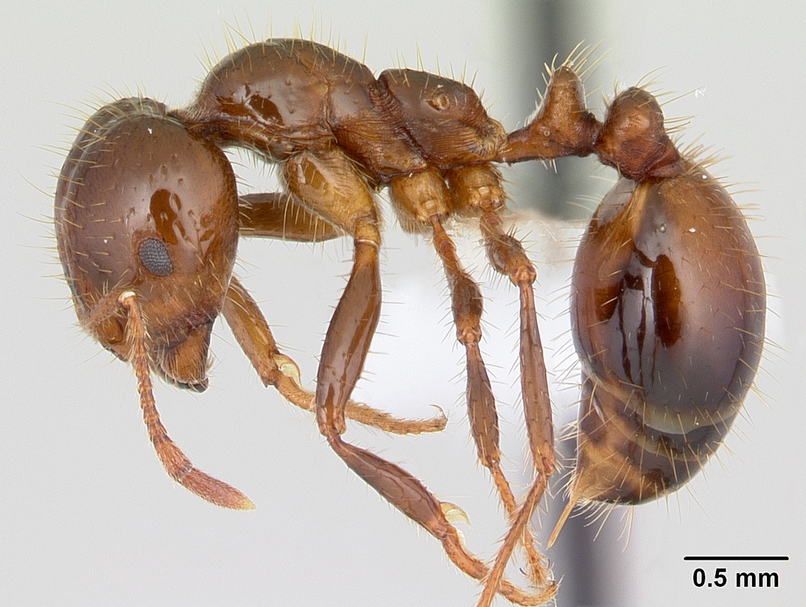

从一个坐标，到一片区域
地图只连接可核查的发现、定殖与处置记录；没有模型支持，就不把记录点画成真实扩散范围
时间轴呈现的是公开资料中可核查的首次发现或报告年份。 省份先后出现并不自动证明物种沿相邻省份传播，也不能据此计算真实扩散速度。 拖动时间轴，可以查看记录如何增加；每个节点仍需回到事件日期、地点和证据来源判断。

原生分布区与中国记录的关联
连线表示同一分类单元同时具有原生分布记录与中国外来记录，不代表贸易路线或直接来源国
同一种物种可能原生分布于多个地区，因此一条连线不是一次传入事件。 要判断它如何进入中国，还需要引种、贸易、运输、检疫或发现记录等路径证据。
原生分布关联与名录状态
行为原生分布区域，列为数据库中的状态等级；色块深浅与数值表示对应的分类单元数量
447年外来入侵植物记录时间线
IPSD收录406种外来入侵植物，其中400种可考首次记录年份 · 从1571年到2018年；最早记录不必然等于实际引入年份
改变的，不只是另一种生物
影响可能抵达自然、生态系统给予人的贡献，以及健康、生计、财产与生活选择
💰 经济损失：多口径数据演变（美元）
以上数据的巨大差异恰恰说明："经济损失"从来不是一个单一数字。 统计口径不同（物种范围、是否计入间接损失、是否为累计还是年均），结论可差数十倍。 下方冰山图以视觉方式呈现：浮出水面的只是统计到的直接损失，水下还藏着难以量化的生态代价—— 比如本地物种灭绝导致的食物链断裂、生态系统服务功能的永久丧失。
以下两张图表分别展示：经济损失的构成分布（左）与 各省损失排名（右）。 农业损失始终占据大头，但渔业、林业和基础设施的损失也不容忽视； 云南、广东、福建等入侵物种大省，经济损失同样位居前列。
🌏 异宠全球化：393宗截获档案全景扫描
以下数据来自海关总署公布的2025年口岸截获案例。需要明确：这些案例中92.6%属于"异宠走私"， 而非已定殖的入侵物种。"异宠"一旦逃逸或被弃养，才可能成为下一条入侵链的起点。
异宠入境路线图：来源地 → 物种类型 → 入境渠道
东南亚和南美洲是主要来源地；昆虫和爬行动物是走私最多的门类；旅检和邮递是主要入境通道。 这条"异宠供应链"揭示了一个全球化的地下贸易网络。
走私手法分布
截获物种类型
📋 精选案例故事
以下8个案例精选自393宗截获档案，涵盖不同物种、来源和走私手法。← 左右滑动查看 →
全国海关查获案例数据库
上图展示了海关截获案例的地理分布。 深圳、广州、上海、北京等一线口岸是查获的"主力"—— 但这不意味着内陆口岸就没有风险。随着跨境电商和邮递渠道的兴起， 包裹夹带正成为外来物种入境的新通道。
🐢 异宠贸易：屡禁不止的背后
异宠贸易已成为外来物种入侵的主要"扩散引擎"之一。 中国养殖异宠规模已超1700万，其中近八成来自境外。 从巴西龟到鳄雀鳝，从绿鬣蜥到巨人蜈蚣——这些"宠物"一旦被弃养或逃逸， 便可能在本土生态中引发连锁灾难。下方图表展示了跨境快递业务量与海关年度截获批次的变化：包裹洪流之下，截获量连年攀升。
防线不只在国门
从发现、识别、评估到处置与持续监测：一道闸机无法代替整条治理链
🛡️ 六道治理防线：外防输入 内防扩散
从境外预警到生态修复，6环防线构成全链条防控体系
中国的外来物种管理政策经历了从"零散应对"到"全面法治"的演进。 下方时间轴跨越四十年，分为学科奠基、体系构建、全面法治三个阶段， 记录了中国从1986年零星摸索到2026年六部门联合管控的完整历程。
从零星探索到系统学科，中国入侵生物学走了十六年
🔍 发现后怎么办：5大场景行动指南
无论在哪里发现疑似外来入侵物种，记住：不接触、不扩散、快记录、找部门
下一次相遇，我们能否更早认出它？
看见之后，先留下可核查的时间、地点与影像；不要让一次好奇、弃养或放生继续打开通往自然的门
真正的防线，也在一次具体选择里
它在搜索框、快递单、饲养箱，以及一次是否放生的决定里。
- 科属
- 原产地
- 等级
- 记录广度
- 影响